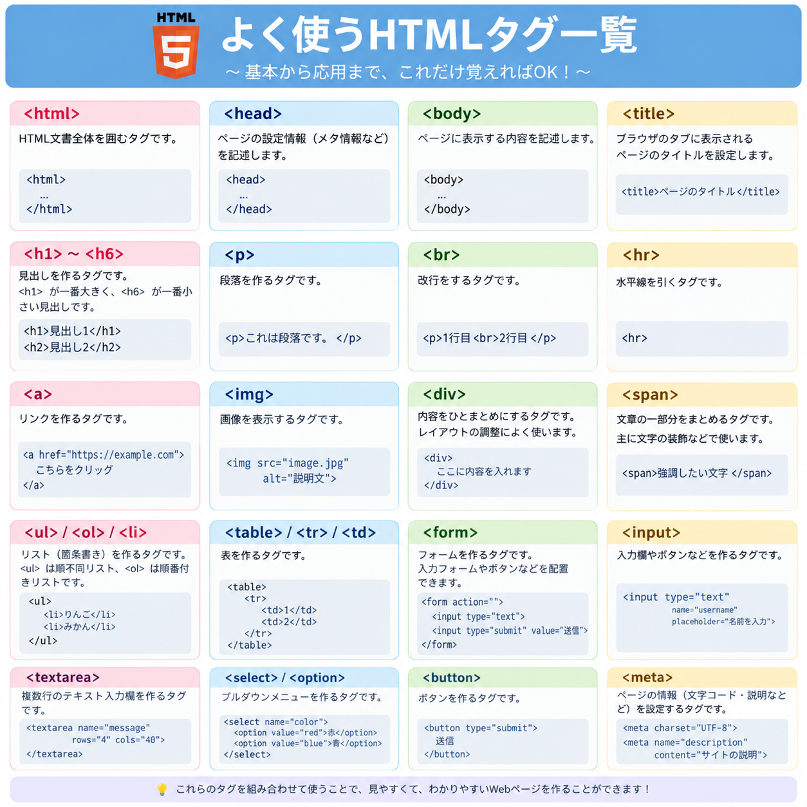

2. HTMLについて
HTMLはWebページの構造や内容を作るための言語であり、見出し・文章・画像・リンクなどを設定することができる
HTMLの基本構造
HTMLは主に
headと
bodyで構成されている
headはページの情報を記述する
bodyはブラウザに表示する文章や画像などを記述する
HTMLとCSSの違い
HTMLはWebページの構造や内容を作る
cssは文字の色や大きさ、配置、背景などのデザインを設定する
2つを組み合わせることで見やすいWebページを作ることができる
これを知っておくと便利

HTMLについて詳しく知りたい場合はここをクリック
3. まとめ
Gitはファイルの変更履歴を管理するための仕組みであり、HTMLはWebページの構造や内容を作るための言語である
Gitを使うことで作業の履歴を管理でき、HTMLを学ぶことで自分でWebページを作成できる
それぞれの役割を理解し、目的に合わせて活用することが大切である